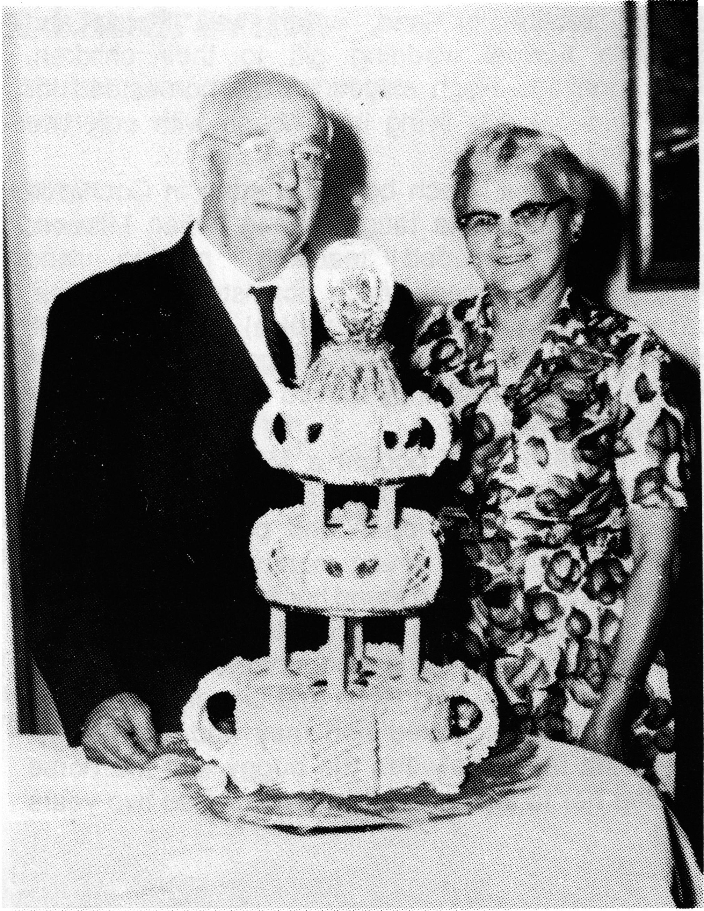

ROSEANNA (L'HEUREUX) LANDREVILLE
Roseanna was born in November of 1894, and was raised on the family ranch in Jackfish Lake, Saskatchewan. She attended a one room school which comprised of all L'Heureux children. They had to be very alert on the way to school as Roseanna mentioned many a time that during the winter months, a wolf or wolves would stock them as they walked or rode.
Not only did they have to keep a watchful eye out on the way to school but also when they were at home. While playing in the tall grass on the ranch, she once spotted Indians observing them. There was always fear of being abducted by the Indians, which incidentally did happen to a neighborhood child.
Even though growing up did have it's difficult times, there were always the fun times, such as the time when Roseanna and her brothers Wilfred and Antoine drank the hard liquor that Grandma Sophie had made, bottled and placed in the dirt holes in the root cellar. Empty bottles soon accumulated, so upon hearing that Grandpa Moise was bringing an official from the Government over to the house, all three decided that it would be best if their father didn't find any empty bottles. The three then proceeded to fill the bottles with tea. Upon arriving, Moise offered a drink to his guests.........Eh! Moudis! (his favorite swear word). No one ever owned up!
Roseanna and her sister Antoinette were also said to have been seen sneaking a taste of the barrel wash from Grandma Sophie's beer kegs. But before Roseanna and the others found the beer kegs, the brown sugar barrels were the favorite. When Roseanna and Uncle Tony were younger, they got into the brown sugar, which was then bought in barrels. In fact, they ate so much brown sugar that they became violently sick. They were caught in the act of being sick, and their hands were still in the sugar barrel.
In her early teens, Roseanna and Antoinette attended convent school where Roseanna learned to play the organ, mouth organ, and accordian. Roseanna also had a beautiful singing voice which was inherited by three of her eldest daughters.
Roseanna was always a hard worker. She finished school and worked on the ranch, mostly helping Grandpa keep his accounts and lending a hand in the fields. She once told us of a special surprise birthday party for Grandpa which was arranged by Grandma with twenty families invited. In those days, distance was quite a few miles between ranches, so company stayed for three or four days; people could be found sleeping everywhere.

Grandma had butchered one calf, one pig, twelve or fourteen turkeys, and made fifty or more sweet pies. Mother remembered how many vegetables she had peeled and cleaned. It must have been quite an event!
Speaking with Mom, her fondest memories were of when she was teaching and riding horses. Her father was always appalled to see Roseanna on a stallion, for she was of very small stature, which made riding a stallion an adventure in itself. Not quite five feet tall, clad in her typical Sunday afternoon outfit consisting of culottes and a white mutton-sleeved blouse and her size 1 1/2 riding boots, she would return to her teaching job at the Indian Mission. It would have been a great delight to have seen her then.
Roch Landreville was born in St. Sulpice, Quebec, on November 22, 1895. He had completed his classical studies at the L'Assomtion College and was studying to be a pharmacist.
During the First World War, in 1914, the farmer's in the west were recruiting workers for the summer crops. Roch decided to take on this challenge and began working for Moise L'Heureux at Jackfish Lake, Saskatchewan. He met and fell in love with Roseanna. He returned to Quebec to finish his studies and returned to Jackfish Lake to marry his beloved Roseanna.
They were married on July 6, 1915 and received as a wedding present from her parents, a quarter section of land, which was Moise and Sophie's normal wedding gift to their children. Roseanna and Roch stayed on the homestead for two years, at first living in a house with only two rooms and dirt floors.
After that, Roch bought a store in Cochin in 1917 and Roseanna taught at the Indian Mission. Her duties included teaching, nursing, and supplying noon meal which consisted of hot tea, sailor bread (very large hard cookie) and cod liver oil, all of which was supplied by the government. Roch lost the store and so they moved to Meota where he worked in a drug store.
In 1921, they bought a Model T Ford. One day, the family went out for a ride. Lo and behold if the back door didn't open and poor little Juliette, who was only six or seven months at the time, fell out! We drove back and found her in a ditch.
When Rose was pregnant with Claire, she was actually expecting twins and unfortunately, on an outing in a buggy with Roch and Lionel, their eldest son, the horse spooked and they had a runaway. Roseanna fell in between the buggy and the horse causing her to lose one of the twins. Also two years later, they lost a nine month old son, Charles, to intestinal infection.
In 1925, the family moved to Edmonton, where Roch worked for two years at $75.00 per month. In 1927, the family moved again to St. Paul, Alberta where Roch worked at the Brosseau's Store, starting at $125.00 per month. He was at Brosseau's until 1936 at which time he decided to become the manager of the Liquor Store in St. Paul. He remained there until his retirement in 1960.
Roch and Roseanna spent 57 years together and in those years had seven children. Roseanna stayed very active in church activities and singing in the church choir. She always found it in her heart to help needy natives which came to our door, by giving them food or clothes, even if she was scrimping for her own family.
There were many hard years when we grew up but we always had our family, and the happy times - the times we will never forget.
Roseanna passed away on March 11, 1972 at the age of 76. Roch passed away on August 18, 1972 also at the age of 76.
Rose L'Heureux Landreville
| NAME | BORN | MARRIED | SPOUSE | BOY | GIRL | DIED |
|---|---|---|---|---|---|---|
| Rose | Nov. 3, 1894 | July 6, 1915 | Roch Landreville | 2 | 4 | Mar. 11, 1972 |
| Roch | Aug. 18, 1972 | |||||
| ROSE'S FAMILY | ||||||
| Lionel | Apr. 11, 1916 | Mar. , 1937 | Aurore Larose | 0 | 1 | |
| Remarried | Oct. 31, 1967 | Veronica Catto | 0 | 0 | Oct. 14, 1985 | |
| Claire | Aug. 24, 1918 | Sept. 5, 1942 | Bernard Gosselin | 0 | 2 | |
| Juliette | Aug. 24, 1922 | Dec. 27, 1945 | Doug Prenevost | 0 | 5 | Dec. 16, 1977 |
| Remarried | June 29, 1968 | Lucien St. Arnault | ||||
| Irene | May 15, 1923 | June 11, 1942 | Paul Gibeault | 1 | 1 | Aug. 13, 1957 |
| Pierre | May 10, 1920 | Priest | July 7, 1942 | |||
| Madeleine | Jan. 29, 1934 | Sept. 4, 1956 | Cyril Barry | 1 | 2 | |
| Rose's Grandchildren | ||||||
| LIONEL'S FAMILY | ||||||
| Claudette | Jan. 8, 1938 | Feb. 7, 1959 | Raymond Muller | 2 | 2 | |
| Rose's Great Grandchildren | ||||||
| Lionel's Grandchildren | ||||||
| CLAUDETTE'S FAMILY | ||||||
| Elaine | Nov. 5, 1959 | |||||
| Ronald | Oct. 1, 1961 | |||||
| Darcy | May 7, 1970 | |||||
| Renee | July 21, 1977 | |||||
| Rose's Grandchildren | ||||||
| CLAIRE'S FAMILY | ||||||
| Louise | Nov. 7, 1944 | Oct. 7, 1967 | Gilles Moreau | 0 | 3 | |
| Lorraine | June 7, 1943 | June 25, 1964 | Louis Defresne | 2 | 1 | |
| Rose's Great Grandchildren | ||||||
| Claire's Grandchildren | ||||||
| LOUISE'S FAMILY | ||||||
| Genevieve | ||||||
| Isabelle | ||||||
| Caroline | ||||||
| LORRAINE'S FAMILY | ||||||
| Francois | ||||||
| Suzanne | ||||||
| Benoit | ||||||
| Rose's Grandchildren | ||||||
| JULIETTE'S FAMILY | ||||||
| Sylvianne | Dec. 6, 1946 | Aug. 12, 1969 | Terrance Pulkrabek | |||
| Remarried | Feb. 8, 1980 | Richard Friss | 2 | 0 | ||
| Patricia | Apr. 7, 1949 | Aug. 8, 1970 | Russel MacPherson | 0 | 3 | |
| Elaine | May 1, 1953 | Lyle Gaudin | 1 | |||
| Claudette | May 13, 1954 | |||||
| Carole Anne | Apr. 21, 1958 | Sept. 9, 1978 | Marc DeChamplain | |||
| Rose's Great Grandchildren | ||||||
| Juliette's Grandchildren | ||||||
| SYLVIANNE'S FAMILY | ||||||
| Robert (step) | Apr. 4, 1967 | |||||
| Kenneth (step) | Sept. 12, 1969 | |||||
| PATRICIA'S FAMILY | ||||||
| Carrie Lynn | Feb. 22, 1972 | |||||
| Lisa Marie | Mar. 28, 1974 | |||||
| Aaron Judy | Mar. 21, 1979 | |||||
| ELAINE'S FAMILY | ||||||
| David | Feb. 11, 1974 | |||||
| Rose's Grandchildren | ||||||
| IRENE'S FAMILY | ||||||
| Pierre (adpt) | Jan. 3, | 0 | 1 | |||
| Suzanne (adpt) | 0 | 1 | ||||
| Rose's Great Grandchildren | ||||||
| Irene's Grandchildren | ||||||
| PIERRE'S FAMILY | ||||||
| SUZANNE'S FAMILY | ||||||
| Rose's Grandchildren | ||||||
| MADELEINE'S FAMILY | ||||||
| Mark | June 3, 1957 | Jan. 5, 1983 | ||||
| Valerie | May 17, 1958 | May 3, 1960 | ||||
| Karen | Jan. 26, 1964 | Aug. 20, 1983 | Alfred Arndt | |||
| TOTAL DESCENDANTS | 56 |
| LIVING | 44 |
| DECEASED | 8 |